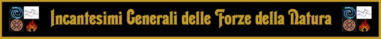

1° LIVELLO DI POTERE
|
|
| Call Upon Faith | Summoning |
| Sphere : | Summoning |
| Range : | 0 |
| Components : | V, S, M |
| Duration : | Speciale |
| Casting Time : | 1 |
| Area of Effect : | The Caster |
| Saving Throw : | None |
Prima di iniziare una qualsiasi difficile azione il chierico può invocare l'aiuto della propria divinità. In questo modo il chierico otterrà un beneficio corrispondente ad un bonus +3 (+15%) che potrà applicare ad un singolo tiro necessario ad effettuare il compimento dell'azione. Questo beneficio può essere utilizzato solo per il compimento di un'azione che inizi e si concluda nel round immediatamente successivo a quello del lancio della presente magia. Si noti che questo incantesimo non può essere utilizzato nel caso in cui il chierico desideri effettuare un'azione consistente nell'invocare un intervento divino. Il componente materiale di questo incantesimo è il simbolo sacro del chierico.
|
|
| Combine | Summoning |
| Sphere : | All |
| Range : | Tocco |
| Components : | V, S |
| Duration : | Speciale |
| Casting Time : | 1 round |
| Area of Effect : | Speciale |
| Saving Throw : | None |
Questo incantesimo cumulativo può essere utilizzato da due a quattro chierici. La magia, per precisione, viene utilizzata sempre sul chierico del livello di esperienza più lato (in caso di chierici di pari livello su uno a loro scelta) da quelli di livello più basso. Costoro lanciano la magia toccando il chierico che deve ottenere gli effetti benefici. Quest'ultimo quindi potrà considerarsi, fino a che perdura questa magia, di un livello di esperienza superiore per ogni chierico che ha utilizzato su di lui questo incantesimo al solo fine di effettuare un'azione di scacciare o controllare i non morti e di determinare il livello di lancio dei propri incantesimi. Si noti che, nonostante il chierico possa lanciare magie ad un livello di lancio superiore, questo incantesimo non permette al chierico di accedere a magie diverse da quelle alle quali aveva regolarmente accesso né di ottenere punti preghiera supplementari. Per funzionare la magia richiede che il chierico beneficiario non si sposti dalla posizione occupata al momento del suo lancio nonché il mantenimento della concentrazione da parte dei chierici che l'hanno lanciata i quali, se attaccati durante il mantenimento della concentrazione, saranno considerati (sempre che non decidano di interromperla) come se fossero storditi [stunned]. Se, per qualsiasi motivo, viene meno la concentrazione del chierico che ha lanciato questo incantesimo od il suo contatto fisico con il beneficiario (ad es. il chierico che ha lanciato la magia si sposta o cade al suolo knockdown) la magia terminerà immediatamente solo in relazione al chierico che ha interrotto la concentrazione. Se, invece, è il chierico che beneficia di questa magia a spostarsi dalla posizione originariamente occupata (od a cadere al suolo knockdown) costui farà venir meno tutte le magie di combine che gli erano state lanciate. Si noti, infine, che se è solo il chierico beneficiario a perdere la concentrazione nel lancio delle sue magie ciò non influenzerà gli incantesimi di combine che gli erano stati lanciati addosso.
|
|
| Detect Magic | Divination |
| Sphere : | Divination |
| Range : | 0 |
| Components : | V, S, M |
| Duration : | 1 round |
| Casting Time : | 1 round |
| Area of Effect : | The Caster |
| Saving Throw : | None |
Quando il chierico lancia questo incantesimo riesce a percepire la luminosità delle aure magiche presenti entro 30 metri di distanza dallo stesso. Per poter percepire la luminosità dell'aura, però, il chierico deve poter vedere, anche se parzialmente, l'oggetto o la zona in cui l'aura è in effetto. Un chierico non potrà vedere, ad es. l'aura di un oggetto magico che si trova all'interno di uno zaino o sepolto da macerie. In base all'intensità dell'aura, inoltre, il chierico potrà determinare la potenza dell'incantamento. Se si tratta di effetti magici dovuti ad incantesimi, quindi, il chierico potrà determinare il livello di potere della magia di cui analizza gli effetti. Se, invece, si tratta di oggetti magici costui potrà determinarne la potenza dell'incantamento come indicata nella seguente scala:
|
POTENZA DELL'INCANTAMENTO |
PUNTI ESPERIENZA |
| Least Minor Enchantment | 75 punti esperienza |
| Lesser Minor Enchantment | 100 punti esperienza |
| Minor Enchantment | 150 punti esperienza |
| Superior Minor Enchantment | 250 punti esperienza |
| Greater Minor Enchantment | 375 punti esperienza |
| Lesser Enchantment | 500 punti esperienza |
| Superior Enchantment | 1000 punti esperienza |
| Greater Enchantment | 1500 punti esperienza |
Il componente materiale di questo incantesimo è il simbolo sacro del chierico.
|
|
| Endure Cold and Heat | Abjuration |
| Sphere : | Protection |
| Range : | Tocco |
| Components : | V, S, M |
| Duration : | 24 ore |
| Casting Time : | 1 round |
| Area of Effect : | Una creatura |
| Saving Throw : | None |
Questo incantesimo protegge la creatura che lo riceve dal calore e dal freddo. In particolare, per un'intera giornata, chi riceve questo incantesimo non patirà gli effetti di temperature molto basse o molto alte resistendo da -20° a 50° centigradi anche indossando dei comuni vestiti. Qualora il personaggio si trovi esposto a temperature che superano le soglie di resistenza la magia terminerà immediatamente. Qualora, inoltre, il personaggio subisce una qualsiasi forma di danno (sia di origine magica che naturale) da freddo, fuoco o calore la magia terminerà immediatamente ma il primo danno di questo tipo subito sarà ridotto di 2 punti danno + 1 punto danno per livello di lancio della magia (fino ad un massimo di 10 punti danno all'8° livello di esperienza). Questa magia, infine, terminerà immediatamente qualora chi l'ha ricevuta si sottopone agli effetti di una qualsiasi altra protezione magica al freddo, al fuoco od al calore. Il componente materiale di questo incantesimo è il simbolo sacro del chierico.
|
|
| Find Water |
Divination |
| Sphere : |
Divination |
| Range : |
0 |
| Components : |
V, S, M |
| Duration : |
Istantanea |
| Casting Time : |
1 round |
| Area of Effect : |
The Caster |
| Saving Throw : |
None |
Attraverso questa magia il chierico percepisce la presenza di acqua o falde acquifere entro 100 metri dalla sua persona. In particolare al lancio della magia il chierico potrà individuare la presenza di acqua a tale distanza venendo a conoscenza anche della quantità di acqua presente secondo il seguente schema: piccolo ammontare (come ad esempio una pozzanghera, si noti che la magia rivelerà unicamente concentrazioni di acqua pari ad almeno un litro); ammontare di discrete proporzioni (quale ad esempio una botte, una cisterna, una grossa pozza), riserva considerevole (si tratta di fonti dal difficile esaurimenti quali un pozzo connesso ad una falda, uno stagno, un ruscello o un fiume, una fonte, una palude, un lago od il mare). Il chierico, inoltre, avrà una possibilità pari al 5% per livello di esperienza (fino ad un massimo di 75%) di capire se si tratta di acqua potabile o non utilizzabile per bere (il chierico non saprà però il motivo per cui l'acqua individuata non sia potabile, potendo essere ad esempio semplicemente salata, contaminata oppure avvelenata). Quando individua l'acqua presente nel raggio d'azione il chierico verrà a conoscenza anche della direzione della stessa nonché della sua distanza in metri (si noti, a tal fine, che il chierico individua tale presenza anche attraverso mura, roccia od altri ostacoli fisici). La magia non rivelerà la presenza di liquidi diversi dall'acqua. Il componente materiale di questo incantesimo è un ramo da rabdomante dal peso di 1 libbra e dal costo di 5 monete d'oro che non si consuma al lancio della magia.
|
|
| Magical Stone | Enchatment |
| Sphere : | Combat |
| Range : | Tocco |
| Components : | V, S, M |
| Duration : | Speciale |
| Casting Time : | 4 |
| Area of Effect : | da 1 a 3 ciottoli |
| Saving Throw : | None |
Utilizzando questo incantesimo il chierico può incantare fino a tre ciottoli non più grandi di quelli utilizzabili come proiettili comuni di una fionda. Una volta incantati i ciottoli potranno essere scagliati a mano fino a 30 metri di distanza. I ciottoli potranno essere scagliati anche tutti nel medesimo round (il primo ad un fattore iniziativa pari a +3, gli altri a fine round come attacchi multipli non simultanei). Per colpire il bersaglio sarà necessario effettuare un normale tiro per colpire (modificato dalla destrezza) anche se l'incantamento divino presente sui ciottoli farà automaticamente considerare abile nel loro uso chi si appresta a lanciarli. I ciottoli, inoltre, saranno considerati come armi magiche con incantamento +1 al solo fine di determinare se siano in grado di danneggiare creature immuni alle armi normali. Ogni ciottolo che va a segno provocherà 1d4 danni da impatto, 2d4 danni da impatto contro i non morti e le creature demoniache. Una volta lanciati i ciottoli si sgretoleranno in polvere definitivamente. I ciottoli possono anche essere lanciati come proiettili di una fionda ma in tal caso saranno utilizzate le normali regole di attacco (tranne che per l'incantamento e per i danni subiti dal bersaglio una volta colpito). Se i ciottoli non sono utilizzati immediatamente la magia perdurerà sugli stessi per 30 rounds al termine dei quali i ciottoli si sgretoleranno comunque in polvere come se fossero stati lanciati. Il componente materiale di questo incantesimo è il simbolo sacro del chierico e fino a tre ciottoli di fiume dalla forma assai levigata dal valore di 1 monete d'oro (per tutti e tre i ciottoli) e dal peso di 1/2 libbra l'uno.
|
|
| Precipitation | Conjuration |
| Sphere : | Elemental Water |
| Range : | 30 metri |
| Components : | V, S, M |
| Duration : | 2-10 round (1d6+1d4) |
| Casting Time : | 4 |
| Area of Effect : | Sfera di 15 metri di diametro |
| Saving Throw : | None |
Quando il chierico lancia questo incantesimo una sottile ma fitta pioggerella inizia a cadere nell'area d'effetto della magia. Le candele (se non adeguatamente schermate) si spegneranno immediatamente, le torce e le lanterne avranno il 25% di possibilità alla fine di ogni round di permanenza nell'area d'effetto di spegnersi per essersi totalmente bagnate. Se queste fonti sono schermate avranno solo il 10% di possibilità di spegnersi. Fuochi o fiamme di dimensioni maggiori non saranno spente della pioggerella. Fuoco di natura magica (si pensi a quello prodotto da incantesimi quali fireball e burning hands oppure a quello prodotto da creature, come ad esempio il soffio del drago) potrà propagarsi nell'area incantata ma la sua forza (solo all'interno di detta area) sarà ridimensionata. Tutti i danni prodotti con fuoco magico saranno infatti ridotti del 25% (riduzione calcolata, però, per difetto), inoltre, tale fuoco avrà solo il 50% di possibilità di incendiare gli oggetti ai quali normalmente avrebbe fatto prendere fuoco all'interno dell'area d'effetto. Inoltre, tutti coloro si trovano nell'area d'effetto della magia riceveranno un bonus di +1 a qualsiasi tiro salvezza contro fuoco (ciò indipendentemente dalla circostanza che la fonte del fuoco magico si trovi all'interno od all'esterno dell'area). Infine, le creature il cui corpo è formato interamente od in gran parte da fiamme (si pensi ad un elementale del fuoco) dovranno superare un tiro salvezza contro raggio della morte appena entrate nell'area d'effetto di questo incantesimo. Se il tiro salvezza fallisce costoro saranno considerate incapacitate fino a che resteranno all'interno dell'area d'effetto della magia ed i loro attacchi (se basati sul fuoco) saranno ridotti come sopra specificato del 25% dei danni. Creature di dadi vita pari o superiore a 9 sono immuni all'effetto di questo incantesimo. Il componente materiale di questo incantesimo è il simbolo sacro del chierico.
|
|
| Purify Food and Drink | Alteration |
| Sphere : | All |
| Range : | 30 metri |
| Components : | V, S |
| Duration : | Istantanea |
| Casting Time : | 1 round |
| Area of Effect : | Speciale |
| Saving Throw : | None |
Attraverso questo incantesimo il chierico è in grado di purificare bevande o cibo che era stato in qualsiasi modo contaminato (ad esempio avvelenato od in stato di putrefazione). Si noti che questa magia funziona solo sul cibo per cui può essere utilizzata sulla carne solo dopo che la stessa sia stata macellata non potendo la magia essere lanciata direttamente su un cadavere. Stesso discorso vale per le bevande che devono essere state imbottigliate (non potendosi ad es. lanciarsi la magia su un pozzo) e sui frutti e le verdure che devono essere stati in precedenza raccolti (non potendo la magia essere lanciata direttamente sulla pianta). Il cibo o le bevande così purificate saranno buone da mangiare e da bere (ovviamente qualora fosse necessario cuocerle sarà comunque ancora necessario farlo). La magia non previene il naturale decadimento dei prodotti successivamente al suo lancio od, in ogni caso, una eventuale nuova contaminazione degli stessi. Per ogni livello di lancio dell'incantesimo il chierico può purificare un ammontare di cibo e bevande sufficienti a sfamare e dissetare una creatura di taglia media per un intero giorno. Questo incantesimo non ha alcun effetto su cibi o bevande magiche (si pensi ad una pozione) od in altro modo incantati (si pensi ad una razione che è stata oggetto di una maledizione).
|
|
| Torch of Everburning | Enchatment |
| Sphere : | Elemental Fire |
| Range : | Tocco |
| Components : | V, S |
| Duration : | Speciale |
| Casting Time : | 1 turn |
| Area of Effect : | Una torcia |
| Saving Throw : | None |
Utilizzando questo incantesimo il chierico può incantare una comune torcia permettendole di bruciare potenzialmente a tempo indeterminato. Dopo il lancio dell'incantesimo, infatti, la torcia si prenderà fuoco e continuerà a bruciare senza, però, mai consumarsi. La magia può, ovviamente, essere dissolta magicamente. Inoltre, la torcia si spegnerà e la magia, conseguentemente terminerà, qualora la stessa sia immersa nell'acqua od altro liquido similare oppure sia completamente bagnata in altro modo. La torcia, infatti, continuerà a bruciare anche qualora la stessa cada al suolo o qualora sia presente vento molto forte. Ovviamente, in tali circostanze la luce irradiata dalla torcia sarà ridotta espandendosi per soli 3 metri. Il chierico può utilizzare questo incantesimo su più torce ma lo stesso non potrà mantenerlo attivo su un ammontare di torce superiore ad una torcia ogni due livelli di esperienza raggiunti (arrotondati per eccesso: 1 torcia al 1° e 2° livello, 2 torce al 3° e 4° livello, e così via...). In ogni momento, però, il chierico potrà far terminare la magia (con un'azione complessa che si considera assimilabile al lancio di un incantesimo, che richiede un intero round ed il mantenimento della concentrazione) su una qualsiasi delle torce che ha precedentemente incantato (indipendentemente dalla distanza e dalla locazione ove tale torcia si trova). Quando la magia, per qualsiasi motivo, termina la torcia si sgretolerà immediatamente in cenere.
|
|
| Water Shield | Abjuration |
| Sphere : | Protection |
| Range : | 0 |
| Components : | V, S |
| Duration : | 1 ora per livello |
| Casting Time : | 5 |
| Area of Effect : | The Caster |
| Saving Throw : | None |
Quando il chierico lancia questo incantesimo costui (e gli oggetti da esso trasportati) viene protetto da una barriera invisibile impenetrabile all'acqua. Per tale motivo il chierico risulterà completamente asciutto anche qualora si trovi sotto una pioggia incessante oppure si immerga totalmente nell'acqua. Qualora il chierico sia oggetto di un attacco basato sull'acqua (si pensi alle magie della scuola evocation water), inoltre, questa magia dona a costui una sorta di resistenza magica pari al 25%. Se il tiro percentuale ha successo il chierico sarà considerato totalmente immune agli effetti dell'attacco o della magia. Se, invece, il tiro percentuale fallisce il chierico subirà regolarmente gli effetti dell'attacco o dell'incantesimo (si bagnerà quindi regolarmente) ricevendo, però, in ogni caso, un bonus di +1 agli eventuali tiri salvezza concessi per evitare o ridurre gli effetti subiti.
|
|
| Wind Column | Evocation Air |
| Sphere : | Protection |
| Range : | 15 metri |
| Components : | V, S |
| Duration : | 10 round |
| Casting Time : | 4 |
| Area of Effect : | Sfera di 3 metri di diametro |
| Saving Throw : | None |
Quando il chierico lancia questo incantesimo viene ad esistenza una colonna di
forte vento in una sfera di 3 metri di diametro (un esagono). Se una creatura,
di taglia massima Large, occupa quella posizione costei risulterà protetta dal
vento e riceverà i seguenti benefici:
- Tutti gli attacchi effettuati scagliando proiettili con armi da tiro (od
oggetti ad essi assimilabili), ad eccezione del macigno scagliato dal bastone a
fionda e del dardo scagliato dalle balestre pesanti, diretti all'interno della
colonna di vento o che comunque passino attraverso la stessa riceveranno una
penalità di -2 al tiro per colpire. Questa penalità si applica anche agli
attacchi posti in essere dall'interno della colonna verso l'esterno.
- Tutti gli attacchi effettuati scagliando armi da lancio (od oggetti ad essi
assimilabili), macigni scagliati dal bastone a fionda e dardi di balestre
pesanti, diretti all'interno della colonna di vento o che comunque passino
attraverso la stessa riceveranno una penalità di -1 al tiro per colpire (massi o
proiettili di dimensioni maggiori non riceveranno alcuna penalità). Questa
penalità si applica anche agli attacchi posti in essere dall'interno della
colonna verso l'esterno.
- La creatura che si trova all'interno della posizione occupata dalla colonna di
vento riceverà un bonus di +3 a tutti i tiri salvezza dovuti alla propagazione
nell'area di gas, polveri, spore, od altre altre sostanze volatili (si pensi, ad
esempio, al propagarsi di un gas tossico od soffio di gas velenoso del drago
verde).
La colonna di vento resta stabile nella posizione in cui è stata creata per
tutta la durata dell'incantesimo.
2° LIVELLO DI POTERE
|
|
| Augury |
Divination |
| Sphere : |
Divination |
| Range : |
0 |
| Components : |
V, S, M |
| Duration : |
Istantanea |
| Casting Time : |
5 round |
| Area of Effect : |
The Caster |
| Saving Throw : |
None |
Questo incantesimo consiste in un vero e proprio rituale divinatorio. Al termine del lancio della magia il chierico, infatti, potrà leggere alcune ossa di drago per determinare se una specifica azione che intende compiere sarà benefica o dannosa. Al momento del lancio, quindi, il chierico dovrà formulare una domanda di senso compiuto indicante una specifica azione che costui vorrà intraprendere. Possono considerarsi domande ammissibili ad esempio: "Sarà propizio avventurarsi oltre le scale che scendono nel sottosuolo della cantina?", oppure "Sarà propizio combattere contro il custode di giada?" e così via... Orbene il chierico avrà una possibilità di ottenere dalla propria divinità una risposta al quesito pari al 50% + punteggio di saggezza posseduto + 1% per livello di esperienza. Se il tiro fallisce il chierico non potrà effettuare nuovamente la medesima domanda alla divinità prima di aver raggiunto un nuovo livello di esperienza. Se il tiro, invece, riesce, la risposta apparirà direttamente nella mente del chierico nelle forme di una piccola frase. La risposta si limiterà ad effettuare osservazioni sul rapporto tra benefici e pericolosità/dannosità dell'azione che il chierico intende compiere. La risposta non rivelerà, però, mai dettagli concernenti la domanda, non svelerà ad esempio la fonte o la tipologia del pericolo o la tipologia od entità dei benefici. La valutazione sarà effettuata alla luce delle conoscenze del chierico, delle azioni compiute fino a quel momento, della forza sua e del suo gruppo. Si tenga presente che le informazioni sono ottenute in base alle circostanze di tempo e di luogo che sussistono al momento del lancio della magia, per tale motivo non potranno effettuarsi domande che contengano alcun tipo di speculazioni sul futuro ed, inoltre, con lo scorrere del tempo le informazioni ricevute potrebbero poi risultare erronee al mutare delle circostanze. Per fare un esempio supponiamo che il chierico effettui la seguente domanda: "sarà propizio avventurarsi oltre le scale che scendono nel sottosuolo della cantina?". Orbene, nella cantina al momento della domanda è presente un mostro non battibile dal gruppo del chierico allo stato dell'equipaggiamento trasportato ma è presente anche una gemma di ingente valore (sempre in relazione alla situazione patrimoniale soggettiva del chierico e del suo gruppo). La risposta della divinità potrebbe essere del tipo "il sottosuolo nasconde grandi benefici ma la morte vi attende prima di ottenerli". Lanciare più volte la magia pronunciando la medesima domanda, a parità di condizioni di fatto, darà la medesima risposta. Si noti, infine, che una sola di queste magie può essere lanciata ogni giorno (per ogni flusso di energia divina della divinità). Il componente materiale di questo incantesimo sono delle ossa di drago incise con rune divinatorie dal valore di 500 monete d'oro che non si consumano al lancio della magia.
|
|
| Dust Vortex |
Evocation Air |
| Sphere : |
Combat |
| Range : |
18 metri |
| Components : |
V, S |
| Duration : |
5 round |
| Casting Time : |
4 |
| Area of Effect : |
Una creatura |
| Saving Throw : |
Negates |
Il chierico può lanciare questo incantesimi su qualsiasi creatura di dimensioni massime Large. La vittima ha diritto a superare un tiro salvezza su magia per evitare gli effetti dell'incantesimo. Se il tiro salvezza fallisce, la vittima sarà circondata da un vortice di polvere che, irritando i suoi occhi e rendendo più difficoltosa la respirazione, gli impedirà di combattere con efficienza. La vittima, infatti, subirà per tutta la durata dell'incantesimo una penalità di -2 ai suoi tiri per colpire ed il 20% di fallire nella concentrazione durante il lancio delle magie. I costruiti, i non morti, i melmoidi e le creature provenienti dal piano elementale dell'aria o dai suoi piani confinanti sono immuni agli effetti di questa magia.
|
|
| Elemental Tentacle |
Evocation |
| Sphere : |
Combat |
| Range : |
15 metri |
| Components : |
V, S, M |
| Duration : |
1 round per livello |
| Casting Time : |
1 round |
| Area of Effect : |
Speciale |
| Saving Throw : |
Speciale |
Lanciando questa magia il chierico fa apparire un lungo tentacolo interamente
costituito di materiale elementale proveniente dal piano di riferimento. Il
tentacolo elementale non potrà spostarsi dal luogo ove è stato creato (occuperà
quella posizione come se fosse una creatura inamovibile) ma potrà essere
utilizzato dal chierico per attaccare per tutta la durata della magia. Per
comandare il tentacolo al fine di farlo attaccare il chierico deve concentrarsi
ed effettuare un'azione complessa assimilabile al lancio di un incantesimo
avente fattore iniziativa pari a +5. Quindi l'attacco del tentacolo avverrà
simultaneamente al compimento di tale azione. Si noti che il chierico deve
trovarsi ad una distanza massima pari a 15 metri dal tentacolo per poterlo
comandare efficacemente. Date le sue dimensioni, il tentacolo può attaccare con
un attacco in corpo a corpo una qualsiasi creatura si trovi entro 6 metri di
distanza dallo stesso (2 esagoni). Si noti che il tentacolo muovendosi solo al
comando del chierico non effettuerà in alcun caso attacchi di opportunità.
Quando il chierico non impartisce l'ordine di attacco al tentacolo, lo stesso
resterà fermo in attesa di ordini. Per effettuare il suo attacco, il tentacolo
utilizzerà la Thac0 base del chierico. Il tentacolo può essere distrutto
fisicamente ma in ogni caso è totalmente immune ai danni non magici. Gli effetti
dell'attacco, la classe armatura e la resistenza del tentacolo cambiano a
seconda del piano elementale utilizzato nella creazione del tentacolo:
1) Acqua:
Il tentacolo che è composto interamente di acqua gelida ha una classe armatura
pari ad AC 6, punti ferita pari a 15 + 1 per livello di lancio della magia. Il
suo attacco provoca 1d6 danni da botta + 4 danni da freddo intenso. La creatura
inoltre dovrà superare un tiro salvezza su robustezza per non
restare incapacitata dal freddo intenso per 1d2 round. Le creature abituate a
vivere tra i ghiacci nonché le creature immuni al freddo (od in grado di
resistere ai danni da freddo) prodotti dal tentacolo sono immuni (od hanno una
percentuale di immunità pari a quella della riduzione) agli
effetti secondari dell'attacco.
2) Aria:
Il tentacolo che appare come un sottile turbine vorticoso carico di elettricità
ha una classe armatura pari ad AC 5, punti ferita pari a 12 + 1 per livello di
lancio della magia. Il suo attacco provoca 8 danni da elettricità dimezzabili
superando un tiro salvezza su robustezza; se il tiro salvezza
fallisce la vittima, oltre a subire danni pieni, si considererà incapacitata a
causa della scossa subita per tutto il resto del round in corso.
3) Terra:
Il tentacolo che è composto interamente di terra compatta ha una classe armatura
pari ad AC 4, punti ferita pari a 18 + 1 per livello di lancio della magia. Il
suo attacco provoca 2d6+3 danni da botta.
4) Fuoco:
Il tentacolo che appare come un sottile turbine di fiamme vorticose ha una
classe armatura pari ad AC 7, punti ferita pari a 9 + 1 per livello di lancio
della magia. Il suo attacco provoca 1d8+4 danni da fuoco magico. Nel round
immediatamente successivo all'attacco andato a segno, inoltre, qualora la
vittima non impieghi tutto il round a spegnere le fiamme residue sul suo corpo
la stessa subirà ulteriori 1d6 danni da fuoco.
Alla fine di ogni round di durata della magia, con una free action ad
attivezione mentale, il chierico potrà far sparire il tentacolo sempre che si
trovi ad una distanza massima pari a 15 metri dallo stesso. Il componente
materiale di questo incantesimo è il simbolo sacro del chierico ed una gemma di
tipo ametrino dal valore di 10 monete d'oro e dal peso di 1/10 di libbra che si
consuma al lancio della magia.
|
|
| Elemental Trap | Evocation |
| Sphere : | Wards |
| Range : | Tocco |
| Components : | V, S, M |
| Duration : | Speciale |
| Casting Time : | 1 turn |
| Area of Effect : | Speciale |
| Saving Throw : | None |
 |
Quando il
chierico effettua questo piccolo rituale costui crea una trappola magica
in una sezione di suolo solido delle dimensioni di un esagono (3 metri
di diametro). Al momento della creazione della trappola il chierico
pronuncia la parola magica di disattivazione. Non appena, infatti, una
qualsiasi creatura entra nella zona protetta dalla trappola senza
pronunciare la parola magica di disattivazione la trappola si attiverà
provocando danni ed effetti a seconda del piano elementale di
riferimento utilizzato dal chierico al momento del posizionamento della
trappola. |
|
|
| Elemental Weapon |
Evocation |
| Sphere : |
Combat |
| Range : |
Tocco |
| Components : |
V, S, M |
| Duration : |
3 round + 1 round ogni 2 livelli |
| Casting Time : |
1 round |
| Area of Effect : |
Un'arma |
| Saving Throw : |
None |
Attraverso questa magia il chierico incanta la propria arma infondendo nella
stessa energia dei piani elementali interni. In particolare al momento del
lancio il chierico potrà scegliere il piano elementale da cui attingere
l'energia tra acqua aria terra e fuoco. A seconda del piano prescelto l'arma
otterrà i seguenti benefici:
1)
Acqua: L'arma sarà circondata da un visibile alone di colore azzurro intenso.
Quando il chierico che utilizza l'arma va a segno contro un bersaglio lo stesso
subirà, oltre ai comuni danni dell'arma, 1d6+2 danni supplementari da freddo di
natura magica.
2)
Aria: L'arma sarà circondata da una sottile ma visibile nube grigiastra
percorsa costantemente da scariche elettriche. Quando il chierico che utilizza
l'arma va a segno contro un bersaglio lo stesso subirà, oltre ai comuni danni
dell'arma, 1d6+2 danni supplementari da elettricità di natura magica.
3)
Terra: L'arma diventerà incandescente. Quando il chierico che utilizza l'arma
va a segno contro un bersaglio lo stesso subirà, oltre ai comuni danni
dell'arma, 1d6+2 danni supplementari da calore, danni che non si considereranno
di natura magica.
4)
Fuoco: L'arma sarà circondata da alcune fiamme vorticose. Quando il chierico
che utilizza l'arma va a segno contro un bersaglio lo stesso subirà, oltre ai
comuni danni dell'arma, 1d6+2 danni supplementari da fuoco di natura magica.
La magia terminerà una volta trascorsi 3 round + 1 round ogni due livelli di
lancio dell'incantesimo (3 round al 1° livello, 4 round al 2° e 3° livello, e
così via...). Se, 'però, per qualsiasi motivo il chierico che ha lanciato
l'incantesimo smette di impugnare l'arma la magia terminerà immediatamente anche
prima dello scadere della sua durata massima.
Questo incantesimo non può essere lanciato su armi sulle quali risulti in corso
(nel senso di attivo in quel determinato momento) un incantamento che abbia
effetti similari anche se facenti riferimento ad un diverso piano elementale, né
tali incantamenti protranno essere validamente attivati nel corso della durata
di questo incantesimo (si pensi alle armi incantate con incantamenti quali of
Flaming, Lesser o Superior Elemental, Burning Steel, ecc...). La magia, ad
esempio, potrà essere lanciata su un'arma incantata con un incantamento di
Lesser Elemental (incantamento che si attiva con tiri per colpire pari a
17,18,19 e 20 naturale) ma per tutta la sua durata impedirà allo stesso di
attivarsi indipendentemente dai tiri per colpire effettuati dal chierico. Il
componente materiale di questo incantesimo è il simbolo sacro del chierico ed
una gemma di tipo ametrino dal valore di 10 monete d'oro e dal peso di 1/10 di
libbra che si consuma al lancio della magia.
|
|
| Heat Metal |
Alteration |
| Sphere : |
Elemental Fire |
| Range : |
30 metri |
| Components : |
V, S |
| Duration : |
7 round |
| Casting Time : |
5 |
| Area of Effect : |
Un oggetto di metallo |
| Saving Throw : |
Speciale |
Attraverso questa magia il chierico può far divenire
un qualsiasi metallo estremamente caldo. Le Elven Chain Mail sono immuni a
questo incantesimo mentre gli oggetti magici ottengono una speciale resistenza
alla magia nei confronti di questo incantesimo che è pari al 10% ogni 500 xp (o
frazione) di incantamento totale posseduto. Se, inoltre, l'oggetto è trasportato
da una creatura la stessa ha anche diritto a superare un tiro salvezza su magia per evitare gli effetti della magia. Se la magia ha effetto,
l'oggetto prescelto dal chierico inizierà a riscaldarsi raggiungendo sempre
maggiori temperature. In particolare, saranno raggiunte tre diverse fasi di
riscaldamento ognuna comportante diversi effetti:
1) Oggetto caldo: Questa fase inizia al momento del lancio della magia e
prosegue fino alla fine del round immediatamente successivo (1° e 2° round di
durata della magia). In questa fase l'oggetto inizia ad emanare un intenso
calore chiaramente crescente e percepibile da chi lo trasporta. In questa fase,
però, maneggiare od indossare l'oggetto non provoca alcuna particolare
controindicazione.
2) Oggetto scottante: Questa fase si verifica nel 3° e nel 4° round di durata
della magia. L'oggetto ormai è divenuto scottante. Se l'oggetto era impugnato o
vuole essere impugnato da una creatura in questa fase la stessa deve effettuare
all'inizio di ogni round un tiro salvezza su robustezza. Se il tiro
salvezza fallisce la creatura non riuscirà a mantenere l'oggetto a causa del
dolore subito che, quindi, gli cadrà da mano. Le creature che posseggono la
competenza Pain Tollerance e che riescono in una prova nella stessa ricevono un
bonus di +20% al tiro salvezza (la prova come del resto il tiro salvezza va
ripetuto ogni round). Le creature immuni al dolore (si pensi ad esempio ai non
morti ed ai costruiti) possono mantenere l'oggetto senza alcuna prova. Se
l'oggetto è, invece, indossato dalla creatura la stessa dovrà superare il
suddetto tiro salvezza (con i modificatori e le immunità su menzionate) per non
risultare incapacitata dal dolore subito (anche questo tiro salvezza deve essere
ripetuto ogni round e la vittima sarà incapacitata solo nei round nei quali il
tiro salvezza fallisce). In ogni caso, nel corso di questa fase, l'intenso
calore provoca alla fine di ogni round di durata della magia 1d4+1 danni da
calore alla creatura che impugna od indossa l'oggetto.
3) Oggetto rovente: Questa fase si verifica nel 5°, nel 6° e nel 7° round di
durata della magia. L'oggetto ormai è divenuto rovente. Se l'oggetto era
impugnato o vuole essere impugnato da una creatura in questa fase la stessa deve
effettuare all'inizio di ogni round un tiro salvezza su robustezza
con penalità di -10%. Se il tiro salvezza fallisce la creatura non riuscirà a
mantenere l'oggetto a causa del dolore subito che, quindi, gli cadrà da mano. Le
creature che posseggono la competenza Pain Tollerance e che riescono in una
prova nella stessa ricevono un bonus di +10% al tiro salvezza (la prova come del
resto il tiro salvezza va ripetuto ogni round). Le creature immuni al dolore (si
pensi ad esempio ai non morti ed ai costruiti) possono mantenere l'oggetto senza
alcuna prova. Se l'oggetto è, invece, indossato dalla creatura la stessa dovrà
superare il suddetto tiro salvezza (con i modificatori e le immunità su
menzionate) per non risultare impedita dal dolore subito (anche questo tiro
salvezza deve essere ripetuto ogni round e la vittima sarà impedita solo nei
round nei quali il tiro salvezza fallisce). In ogni caso, nel corso di questa
fase, l'intenso calore provoca alla fine di ogni round di durata della magia
1d6+2 danni da calore alla creatura che impugna od indossa l'oggetto.
Nel round immediatamente successivo alla fine dell'incantesimo l'oggetto
risulterà unicamente caldo (come se fosse nella prima fase di riscaldamento).
Pioggia, neve, od effetti atmosferici assimilabili conferiscono un bonus di +5% a
tutti i tiri salvezza effettuati contro questo incantesimo. Qualora, nel corso
della durata della magia, l'oggetto viene immerso totalmente nell'acqua od in
altro liquido non infiammabile la magia terminerà immediatamente.
|
|
| Hesitation |
Charm |
| Sphere : |
Time |
| Range : |
30 metri |
| Components : |
V, S, M |
| Duration : |
1 round per livello |
| Casting Time : |
3 |
| Area of Effect : |
Una creatura + una creatura /2 livelli > 3° |
| Saving Throw : |
Negates |
Utilizzando questo incantesimo mentale il chierico può distrarre una creatura, più una creatura ogni due livelli di lancio della magia oltre il terzo (una creatura al 3° livello, due creature al 5° livello, tre creature al 7° livello e così via...). Le creature coinvolte hanno diritto a superare un tiro salvezza su mente per evitare gli effetti della magia. Se il tiro salvezza fallisce la vittima risulterà confusa ed otterrà una penalità di +4 a tutti i suoi tiri per l'iniziativa nel corso della durata della magia. Il componente materiale di questo incantesimo è il pezzo di un guscio di tartaruga gigante dal peso di 1/10 di libbra e dal costo di 3 monete d'oro che si consuma al lancio della magia.
|
|
| Produce Flame | Evocation Fire |
| Sphere : | Combat |
| Range : | 0 |
| Components : | V, S |
| Duration : | 1 round / livello |
| Casting Time : | 1 round |
| Area of Effect : | The Caster |
| Saving Throw : | None |
 |
Al termine del round di lancio di questa magia apparirà sul palmo della mano principale del chierico una fiamma ardente. La fiamma non brucia la mano del chierico ma il chierico può utilizzarla per dare fuoco ad oggetti infiammabili. La fiamma, inoltre, può essere utilizzata per combattere. Il chierico, infatti, può scagliare la fiamma sui nemici che si trovino fino ad una distanza di 15 metri. Scagliare la fiamma si considera un'azione complessa di attacco che non affatica il chierico e non richiede il mantenimento della concentrazione. Tale attacco avviene ad un fattore iniziativa pari a +4. Il chierico dovrà effettuare un regolare tiro per colpire contro la creatura che desidera attaccare. Se il tiro per colpire riesce la vittima subirà 1d6+2 danni da fuoco magico. Dopo che è stata scagliata, all'inizio di ogni nuovo round di durata della magia, sulla mano del chierico si formerà una nuova fiamma che il chierico potrà nuovamente lanciare. La magia terminerà immediatamente, però, se il chierico utilizza la mano in qualsiasi altro modo (ad esempio per lanciare un incantesimo, raccogliere o impugnare un oggetto) ed ovviamente potrà essere normalmente dissolta utilizzando la magia. |
|
|
| Resist Cold |
Abjuration |
| Sphere : |
Protection |
| Range : |
Tocco |
| Components : |
V, S, M |
| Duration : |
1 round per livello |
| Casting Time : |
5 |
| Area of Effect : |
Una creatura |
| Saving Throw : |
None |
Questo incantesimo protegge la creatura che lo riceve dal freddo sia di origine magica che naturale. Per tutta la durata dell'incantesimo la creatura protetta subirà solo la metà (calcolata per difetto) di tutti i danni da freddo. Inoltre, qualora la stessa debba superare un qualsiasi tiro salvezza per ridurre il danno subito dal freddo costei riceverà un bonus di +2 al tiro. Il componente materiale di questo incantesimo è il simbolo sacro del chierico ed un piccolo pezzo di carbone dal peso di 0.2 libbre e dal costo di 0.1 monete d'oro che si consuma al lancio dell'incantesimo.
|
|
| Resist Fire |
Abjuration |
| Sphere : |
Protection |
| Range : |
Tocco |
| Components : |
V, S, M |
| Duration : |
1 round per livello |
| Casting Time : |
5 |
| Area of Effect : |
Una creatura |
| Saving Throw : |
None |
Questo incantesimo protegge la creatura che lo riceve dal fuoco e dal calore sia di origine magica che naturale. Per tutta la durata dell'incantesimo la creatura protetta subirà solo la metà (calcolata per difetto) di tutti i danni da fuoco o calore. Inoltre, qualora la stessa deve superare un qualsiasi tiro salvezza per ridurre il danno subito dal fuoco o dal calore costei riceverà un bonus di +2 al tiro. Il componente materiale di questo incantesimo è il simbolo sacro del chierico ed una dose di mercurio che si consuma al momento del lancio Un dispensatore di mercurio con 10 dosi ha un valore di 50 monete d'oro ed un peso pari a 1/2 libbra. .
|
|
| Sanctify |
Summoning |
| Sphere : |
All |
| Range : |
Tocco |
| Components : |
V, S, M |
| Duration : |
24 ore |
| Casting Time : |
1 turno |
| Area of Effect : |
Speciale |
| Saving Throw : |
None |
Questo incantesimo permette al chierico di creare una zona sacra. In particolare l'area d'effetto di questa magia può essere la superficie di un edificio o di un qualsiasi terreno che abbia un'area non superiore a 20 metri quadrati per livello di lancio della magia. Dopo il lancio di questo incantesimo l'area viene pervasa dal potere divino. Per tale motivo, tutti coloro sono fedeli della medesima divinità ottengono un bonus di +2 a tutti i tiri salvezza finché restano all'interno dell'area santificata, tutti coloro sono fedeli di una divinità dello stesso gruppo, ad es. Fratellanza della Luce, riceveranno un bonus di +1 ai tiri salvezza, stesso bonus sarà ricevuto da chi non è fedele di alcuna divinità ma possiede il medesimo allineamento della divinità del chierico che ha lanciato la magia. Creature non fedeli a nessuna divinità con allineamento diverso ed, in ogni caso, fedeli di divinità appartenenti ad un diverso gruppo non riceveranno alcun beneficio. Tutte le creature (indipendentemente dalla loro fede) che si trovano nella zona consacrata e sono intenzionate ad attaccare, od in qualsiasi modo danneggiare, il chierico, i suoi fedeli, ed in generale il culto della divinità che ha consacrato il suolo riceveranno una penalità di -1 a tutti i tiri salvezza fino a che resteranno nell'area consacrata. Oltre a tale beneficio, qualsiasi tentativo di scacciare i non morti presenti all'interno dell'area otterrà un bonus di +2 al potenziale di scaccio, ciò indipendentemente dalla divinità adorata dal chierico che esegue lo scaccio. Il componente materiale di questo incantesimo è il simbolo sacro del chierico e rari incensi per un valore pari a 3 g.p. ogni 20 metri quadrati consacrati che si consumano al lancio della magia.
|
|
| Water Drop | Conjuration |
| Sphere : | Elemental Water |
| Range : | 18 metri |
| Components : | V, S |
| Duration : | Speciale |
| Casting Time : | 4 |
| Area of Effect : | Una creatura |
| Saving Throw : | Negates |
Quando il chierico lancia questo incantesimo un getto d'acqua incredibilmente gelata si materializza sopra la creatura selezionata bagnandola. La creatura, quindi, avrà diritto a superare un tiro salvezza su robustezza per evitare gli effetti della magia. Se il tiro salvezza fallisce, la vittima subirà uno shock corporeo tale da ricevere una penalità di 1 al tiro per colpire e +1 alliniziativa fino a che non sarà in grado di asciugarsi e riscaldarsi (adeguatamente e per un intero turno). In periodi freddi potrà inoltre rischiare seriamente di ammalarsi. Creature la cui pelle non è sensibile ai cambiamenti di temperatura o che sono immuni al freddo (costruiti, non morti, draghi) non subiscono effetti da questa magia. Creature il cui corpo è formato da fiamma (si pensi ad un elemetale di fuoco) non subiranno le penalità prevista ma, al suo posto, subiranno 1d8 danni +1 danno per livello di lancio della magia (dimezzabili superando il previsto tiro salvezza su robustezza).
3° LIVELLO DI POTERE
|
|
| Accellerate Healing | Alteration |
| Sphere : | Time |
| Range : | Tocco |
| Components : | V, S |
| Duration : | 10 giorni |
| Casting Time : | 1 turno |
| Area of Effect : | Una creatura |
| Saving Throw : | None |
Attraverso l'uso
di questa magia il chierico incrementa la guarigione naturale delle ferite della
creatura che la riceve. In particolare la magia agisce sul recupero dei punti
ferita che avviene quando una creatura si riposa. Si noti, quindi, che i punti
ferita curati non saranno in alcun caso considerati cure magiche in quanto la
magia implementa le cure naturali che chi la riceve avrebbe comunque ricevuto
attraverso il tempo ed il riposo. In particolare, la magia raddoppia i punti
ferita che normalmente la creatura avrebbe recuperato risposando. Qualora il
personaggio che si trova sotto gli effetti di questo incantesimo non riposi la
magia non svolgerà, quantomeno per il corso di quella giornata, alcun effetto
benefico sullo stesso. Nella normalità dei casi i punti ferita persi si
recuperano solo con il riposo. Il riposo può essere comune o totale.
Affinché una creatura si consideri in condizioni di riposo comune occorre che la
stessa rispetti per 24 ore le seguenti condizioni:
* Non effettui alcuna azione stancante (ossia un'azione
che preveda l'accumulo di almeno un punto fatica).
* Non soffra per il digiuno o la disidratazione.
* Non effettui il lancio di alcun incantesimo, né utilizzi alcun potere speciale
od oggetto magico per l'attivazione dei quali (nonostante non sia richiesta la
concentrazione) il personaggio deve pronunciare parole od effettuare movimenti
assimilabili ai componenti verbali e somatici degli incantesimi.
* Non utilizzi alcuna competenza non relativa alle armi.
* Dorma per almeno 8 ore consecutive nell'arco delle 24 ore.
* Non si trovi esposto a condizioni ambientali avverse (restare sotto la pioggia
o all'agghiaccio, ad esempio, non consente un adeguato riposo).
* Trascorra tale periodo in posizione relativamente comodità, senza effettuare
attività complesse che richiedono sforzo od attenzione particolare per essere
compiute. In particolare, potranno ritenersi compatibili con una situazione di
riposo regolare le seguenti attività: camminare tranquillamente lungo un
sentiero, cavalcare in pianura o lungo una strada battuta, effettuare
comodamente un turno di guardia. Non saranno considerate, invece, compatibili
con una situazione di riposo regolare le seguenti attività: camminare senza
seguire comodamente un sentiero, cavalcare in zone impervie (foreste, colline,
montagne) e/o fuori da strade battute, effettuare una qualsiasi attività
lavorativa, effettuare una qualsiasi attività di studio o di ricerca.
Ogni 24 ore
trascorse in condizioni di riposo comune, quindi, una creatura recupera
normalmente 1 punto ferita perso (si noti che le creature mostruose recuperano
attraverso il riposo comune 1 punto ferita supplementare per ogni due dadi vita
posseduti arrotondati per difetto). In una situazione di riposo comune, dunque,
chi si trova sotto gli effetti di questa magia recupererà 2 punti ferita ogni 24
ore.
Affinché una creatura si consideri in condizioni di riposo totale (solo le
creature con intelligenza almeno pari a Low [5] possono decidere di effettuare
riposo totale), oltre a rispettare le suddette regole per il riposo comune,
occorre che la stessa trascorra 24 rispettando le seguenti ulteriori condizioni:
* Non effettui
alcun tipo di attività se non quella di dedicarsi completamente al riposo.
* Disponga di cibo e bevande tali che da poter essere considerato ben nutrito ed
idratato.
* Disponga di un comodo giaciglio o, comunque, di una posizione sulla quale
adagiarsi che possa considerarsi per la creatura una postazione comoda (si pensi
ad un comodo letto per un umano od un semi-umano).
* Possa riposare in un luogo chiuso e ben riscaldato, dove vi sia una
temperatura costante ed adeguata (per tale motivo si consideri nella normalità
dei casi un personaggio che si riposi senza il riparo almeno di una tenda, senza
il calore di un fuoco e senza la comodità di un sacco a pelo, non potrà
effettuare riposo totale ma solo riposo comune).
Ogni creatura che si trova in una posizione di riposo totale recupera 1 punto
ferita supplementare in più rispetto a quanti ne avrebbe ottenuti in 24 di
riposo comune. In una situazione di riposo totale, dunque, chi si trova sotto
gli effetti di questa magia recupererà 4 punti ferita ogni 24 ore.
Si noti che questo incantesimo raddoppia unicamente i punti ferita recuperati attraverso il riposo non eventuali punti ferita supplementari ottenuti con altri metodi non magici (si pensi all'utilizzo di unguenti erboristici oppure alle cure mediche).
|
|
| Dispel Magic | Abjuration |
| Sphere : | All |
| Range : | 60 metri |
| Components : | V, S |
| Duration : | Istantanea |
| Casting Time : | 6 |
| Area of Effect : | Sfera di 3 metri di diametro |
| Saving Throw : | None |
Quando il chierico
lancia questa magia ha una certa possibilità di dissipare l'energia magica
presente nell'area d'effetto. In particolare, all'uso di questa magia, potranno
verificarsi una serie di effetti (si noti che la magia proverà automaticamente a
dissipare tutta la magia presente nell'area senza che il chierico possa operare
alcuna forma di selezione o distinzione).
In primo luogo il chierico ha una certa possibilità di dissolvere effetti magici
presenti nell'area d'effetto, nonché quelli attivi sulle creature o sugli
oggetti presenti nella medesima area. Tali effetti magici possono essere
scaturiti dal lancio di incantesimi, dall'uso di poteri magici innati oppure
dall'utilizzo di oggetti magici. Orbene, per determinare se il chierico è
riuscito a dissipare questa forma di magia presente nell'area lo stesso dovrà
effettuare un tiro con 1d20 (si noti che se il chierico vuole dissipare effetti
magici di incantesimi lanciati da se stesso questo tiro si considererà
automaticamente avvenuto con successo senza che lo stesso debba effettuarlo, ciò
non vale però per effetti magici che il chierico ha attivato in altro modo come
ad esempio attraverso l'uso di oggetti magici). La possibilità base di dissipare
la magia sarà pari ad un tiro di 11 o più (corrispondente quindi al 50% di
possibilità).Occorrerà, quindi, confrontare il livello di lancio di questa magia
con quello dell'effetto magico presente nell'area. Per ogni livello di
differenza il chierico riceverà un bonus/malus di +1 al tiro. Se ad esempio un
chierico lancia una magia di dispel magic al 5° livello di lancio in un'area
dove è presente una creatura che è sotto l'effetto di una magia di invisibilità
lanciata al 3° livello il chierico usufruirà di un bonus di +2, dissipando,
quindi, l'invisibilità con un tiro pari a 9 o più. Si tenga presente che un tiro
pari a 20 si considera in ogni caso successo automatico laddove un tiro pari ad
1 sarà comunque un insuccesso. Se il tiro ha successo l'effetto magico sarà
stato definitivamente dissipato. Si noti che il livello di lancio degli effetti
magici varia a seconda della fonte di tale effetto e può essere determinato
consultando la seguente tabella:
| FONTE DELL'EFFETTO MAGICO | LIVELLO DI LANCIO |
| Incantesimo di mago o chierico | Livello di lancio della magia |
| Potere magico innato | Livello specificato oppure dadi vita della creatura |
| Minor Enchantment | 5° livello di lancio |
| Bacchetta Magica | 6° livello di lancio |
| Staffa | 8° livello di lancio |
| Pozione | 12° livello di lancio |
| Altri oggetti magici | 12° livello di lancio |
| Artefatti | Normalmente resistono alla magia dispel magic |
In secondo luogo questo incantesimo può dissipare la magia con la quale sono stati incantati gli oggetti magici presenti nell'area d'effetto (ciò, quindi, indipendentemente dall'uso che ne era stato fatto). Per ogni oggetto magico presente occorrerà effettuare un tiro con 1d20. La possibilità base di dissipare la magia sarà sempre pari ad un tiro di 11 o più (corrispondente quindi al 50% di possibilità).Occorrerà, quindi, confrontare il livello di lancio di questa magia con il livello corrispondente all'incantamento che è stato infuso nell'oggetto magico. Per ogni livello di differenza, quindi, il chierico riceverà un bonus/malus di +1 al tiro. Se, quindi, il tiro ha successo l'oggetto magico sarà disattivato 1d3+1 rounds (nei quali va calcolato il round in cui si è verificato il dispel magic) ed i suoi poteri non potranno essere utilizzati. Per fare alcuni esempi una pergamena magica letta non sortirà alcun effetto (né potranno consumarsi le magie presenti o verificarne la corretta scrittura) ed un'arma magica +2 si considererà per tale periodo una comune arma non dando più benefici e non permettendo di colpire le creature immuni alle armi normali. Si tenga presente che un tiro pari a 20 si considera in ogni caso successo automatico laddove un tiro pari ad 1 sarà comunque un insuccesso. Infine occorre notare che a differenza di ogni altro oggetto magico qualora l'incantamento di un liquido magico (come una pozione) sia dissolto con successo questi perderà definitivamente ed irrimediabilmente ogni potere magico. Per determinare il livello di lancio corrispondente agli incantamenti presenti sui vari oggetti si consulti la seguente tabella:
|
POTENZA DELL'INCANTAMENTO |
PUNTI ESPERIENZA |
LIVELLO CORRISPONDENTE |
| Least Minor Enchantment | 75 punti esperienza | 5° livello di lancio |
| Lesser Minor Enchantment | 100 punti esperienza | 6° livello di lancio |
| Minor Enchantment | 150 punti esperienza | 7° livello di lancio |
| Superior Minor Enchantment | 250 punti esperienza | 8° livello di lancio |
| Greater Minor Enchantment | 375 punti esperienza | 9° livello di lancio |
| Lesser Enchantment | 500 punti esperienza | 11° livello di lancio |
| Superior Enchantment | 1000 punti esperienza | 13° livello di lancio |
| Greater Enchantment | 1500 punti esperienza | 15° livello di lancio |
| Oggetti di potenza superiore | per ogni 500 punti esperienza | +1 livello di lancio oltre al 15° |
| Pozioni Magiche | Irrilevante | 12° livello di lancio |
| Pergamene Magiche | Irrilevante | 10° livello di lancio |
| Artefatti | Irrilevante | Impossibile dissolverne il potere |
Infine occorre osservare che questa magia ha effetto solo sugli effetti magici
già presenti nell'area d'effetto al momento del lancio non influenzando quindi
l'utilizzo di oggetti magici ed il lancio di incantesimo che avvengono nel
medesimo round di combattimento ma ad un fattore di iniziativa successivo a
quello del dispel magic.
|
|
| Meld into Stone | Abjuration |
| Sphere : | Elemental Earth |
| Range : | Tocco |
| Components : | V, S, M |
| Duration : | 5 rounds + 1d10 rounds |
| Casting Time : | 6 |
| Area of Effect : | Speciale |
| Saving Throw : | None |
Attraverso l'uso di questa magia il chierico letteralmente si fonde inserendosi, con tutti gli oggetti dallo stesso trasportati, all'interno di un muro di roccia od um altro blocco di pietra. La magia può essere lanciata su un qualsiasi blocco di pietra sia alto, largo e profondo almeno 2 metri. Il blocco di pietra, inoltre deve essere appoggiato al suolo e sporgere dallo stesso. Per tale motivo la magia può essere utilizzata su un muro di roccia o su un macigno ma non su un pavimento od un soffitto anche qualora gli stessi siano di roccia. La magia non funzionerà qualora il chierico trasporti più di 100 libbre di oggetti inanimati od oggetti la cui lunghezza superi due metri. Quando il chierico entra nella roccia lo stesso occupa la posizione più superficiale della stessa rispetto alla zona in cui è entrato, restando in contatto con la superficie esterna della pietra in cui si è inserito. Una volta nella pietra il chierico non potrà spostarsi, parlare, né effettuare alcuna altra azione fisica. Non avrà necessità di respirare e non vedrà nulla né sentirà ciò che accade fuori dalla roccia. Sarà, però, cosciente e consapevole della sua posizione e del trascorrere del tempo. Alla fine di ogni round di durata della magia il chierico potrà decidere di uscire dalla roccia occupando (alla fine del round in cui ha effettuato la scelta) la medesima posizione dallo stesso occupata prima di entrare nella roccia. Qualora tale posizione risulti occupata il chierico si troverà nella più vicina casella libera eventualmente selezionata a caso fra quelle equidistanti. Se allo scadere della durata della magia (il cui tiro deve essere effettuato segretamente) il chierico non è ancora uscito dalla roccia costui verrà espulso violentemente dalla stessa (occupando una posizione come in caso di uscita volontaria) subendo 3d6 danni da schiacciamento (botta). Si consideri che la superficie di roccia in cui il chierico si è inserito abbia una classe armatura pari a 2 ed 80 punti struttura. Attacchi minori alla roccia in cui il chierico si è inserito, che siano cioè solo in grado di scalfirla o graffiarla non produrranno alcun effetto sul chierico. Attacchi in grado di effettuare danni strutturali, invece, qualora riducano i punti struttura della roccia a zero avranno la conseguenza di espellere il chierico dalla stessa. In tal caso il chierico deve superare un tiro salvezza contro raggio della morte. Se il tiro salvezza fallisce il chierico sarà morto a causa dello schiacciamento, altrimenti lo stesso subirà 4d8 danni da schiacciamento (botta). Si noti che il chierico è consapevole dello stato in cui si trova la roccia in cui si è inserito. Alcuni incantesimi hanno effetti particolari sul chierico se lanciati sulla roccia in cui lo stesso si è inserito: una magia Transmute Rock to Mud espellerà il chierico alla fine del round in corso e lo stesso dovrà superare un tiro salvezza contro incantesimi per non morire; una magia Stone to Flash lo espellerà alla fine del round in corso provocandogli 4d8 danni da schiacciamento (botta), una magia Passwall lo espellerà alla fine del round in corso senza che lo stesso subisca alcun danno. Il componente materiale di questo incantesimo è il simbolo sacro del chierico.
|
|
| Protection from Fire | Abjuration |
| Sphere : | Elemental Fire |
| Range : | Tocco |
| Components : | V, S, M |
| Duration : | Speciale |
| Casting Time : | 1 round |
| Area of Effect : | Una creatura |
| Saving Throw : | None |
Quando questo incantesimo è lanciato su una creatura la stessa riceve una particolare protezione dai danni da fuoco sia di natura comune che magici. In particolare, la magia assorbirà un ammontare di danni da fuoco pari a 25 danni + 5 danni per livello di lancio della magia oltre il 7° livello, fino ad un massimo di 50 danni da fuoco a partire dal 12° livello di lancio. Questi danni saranno scalati a monte di eventuali riduzioni (senza quindi la loro applicazione) dovute ad altri incantesimi od abilità (si pensi alla magia di Resist Fire). Terminati questi danni l'ammontare residuo sarà inflitto alla creatura e la magia terminerà immediatamente. In ogni caso la magia terminerà una volta raggiunto il successivo flusso di energia divina della divinità. Il componente materiale di questo incantesimo è, oltre al simbolo sacro del chierico, una gemma del tipo granato rosso dal valore minimo di 25 monete d'oro e dal peso di 0,1 libbra che si consuma al lancio della magia.
|
|
| Thunderclap | Combat |
| Sphere : | Elemental Air |
| Range : | 0 |
| Components : | V, S |
| Duration : | Istantanea |
| Casting Time : | 7 |
| Area of Effect : | Speciale |
| Saving Throw : | Speciale |
Quando il chierico lancia questo incantesimo un tuono assordante si diffonde dalla sua persona. Il boato può essere udito a grande distanza (chiaramente fino ad un chilometro). Tutte le creature, ad eccezione del chierico, che si trovano entro 9 metri di distanza dallo stesso (da uno a tre esagoni) subiranno 2d4 danni sonori, saranno assordate completamente per 4 round (chi è assordato non può sentire alcun suono. Per tale motivo costui riceve una penalità di -1 ai tiri sulla sorpresa, +1 ai tiri per l'iniziativa ed il 20% di fallire nel lancio di incantesimi che richiedano l'utilizzo di componenti verbali) e dovranno superare un tiro salvezza su robustezza per non risultare assordate per il doppio del tempo previsto nonché stordite fino alla fine del round in corso ed impedite per l'intero round successivo. Le creature che si trovano da 12 metri a 18 metri di distanza (da quattro a sei esagoni) subiranno 1d4 danni sonori, saranno assordate completamente per 2 round e dovranno superare un tiro salvezza su robustezza per non risultare assordate per il doppio del tempo previsto nonché impedite fino alla fine del round in corso ed incapacitate per l'intero round successivo. Se la magia è lanciata in una zona chiusa (una stanza, un sotterraneo, una caverna) il suono sarà più dirompente e il chierico otterrà +2 al dado base dei danni prodotti mentre le vittime riceveranno una penalità di -5% al previsto tiro salvezza. Si noti che questo incantesimo richiede per avere effetto che il suono possa diffondersi fino alle vittime (se, ad esempio, una creatura è sotto effetto di una magia di silenzio questo incantesimo non avrà alcun effetto nei suoi confronti). Le creature non dotate di comuni apparati uditivi organici e di tipo animale (si pensi ai non morti, ai costruiti, ai melmoidi, ecc...) sono immuni a tutti gli effetti di questo incantesimo.
|
|
| Zone of Sweet Air | Abjuration |
| Sphere : | Elemental Air |
| Range : | 30 metri |
| Components : | V, S, M |
| Duration : | 1 round/livello |
| Casting Time : | 6 |
| Area of Effect : | Una sfera di 3 metri di diametro + 1 sfera/livello |
| Saving Throw : | None |
Quando il chierico lancia questo incantesimo l'area d'effetto viene protetta in modo tale che qualsiasi forma di elemento gassoso, ivi compreso il vapore, anche se creato magicamente non potrà diffondersi e se già presente sarà immediatamente eliminato. Creature trasformate in forma gassosa che entrino nell'area protetta acquisteranno immediatamente la forma solida e non potranno acquisire nuovamente la forma gassosa all'interno dell'area protetta. L'area protetta dall'incantesimo corrisponde ad un numero di sfere (esagoni) di 3 metri di diametro corrispondenti al livello di lancio della magia più uno. Il chierico può disporre queste aree a piacimento purché siano disposte senza soluzione di continuità tra di loro, si trovino tutte nel raggio di azione della magia e siano tutte disposte allo stesso livello di altezza dal suolo (non potendosi disporre una sull'altra). Il componente materiale di questo incantesimo è il simbolo sacro del chierico ed una manciata di piume di uccello rapace dal peso di 1/10 di libbra e dal costo di 3 g.p. che si consuma al lancio dell'incantesimo.
|
|
| Water Walk | Alteration |
| Sphere : | Elemental Water |
| Range : | Tocco |
| Components : | V, S |
| Duration : | 1 turno per livello |
| Casting Time : | 1 round |
| Area of Effect : | Una creatura |
| Saving Throw : | None |
Attraverso il lancio di questo incantesimo il chierico può permettere alla creatura toccata di camminare sulla superficie dell'acqua come se fosse un pavimento solido. La magia funziona sull'acqua, sul fango e sulla neve permettendo alla creatura di non affondare e di muoversi senza le restrizioni al movimento previste da tali superfici. Si noti che il soggetto resterà ad un millimetro dalla superficie di tali elementi senza toccarla e senza lasciare, quindi, alcuna traccia e senza increspare la superficie dell'acqua. Questa magia non può essere lanciata sotto la superficie dell'acqua (del fango o della neve). Se, inoltre, il beneficiario di questo incantesimo prova, nel corso della sua durata, ad immergersi sotto la superficie dell'acqua (del fango o della neve) la magia terminerà immediatamente e definitivamente. Il medesimo risultato si verifica qualora chi si trova sotto gli effetti di questo incantesimo è spinto o trascinato sotto la superficie da una creatura, da una qualsiasi forza esterna o è travolto ed investito dalle onde.
|
|
| Weather Prediction | Divination |
| Sphere : | Weather |
| Range : | 0 |
| Components : | V, S |
| Duration : | Istantanea |
| Casting Time : | 1 round |
| Area of Effect : | The Caster |
| Saving Throw : | None |
Questa magia può essere lanciata soltanto all'aperto. Quando lancia questa magia il chierico viene a conoscenza delle condizioni atmosferiche prevalenti che si verificheranno nel luogo in cui la magia è stata lanciata. La previsione riguarderà tutto il resto della giornata e l'intero giorno successivo. In particolare, il chierico determinerà con esattezza l'intensità e la direzione generale dei venti, la tipologia e la quantità di eventuali precipitazioni, le variazioni della temperatura e la copertura nuvolosa.
|
|
| Wind and Rain Protection | Abjuration |
| Sphere : | Wards, Traveler |
| Range : | 0 |
| Components : | V, S |
| Duration : | Speciale |
| Casting Time : | 1 round |
| Area of Effect : | Semi-sfera di 9 metri di diametro |
| Saving Throw : | None |
Questa magia può essere lanciata soltanto all'aperto su una qualsiasi superficie solida. Quando l'incantesimo è lanciato, l'area d'effetto (una semi-sfera di 15 metri di diametro centrata sul chierico che resta fissa una volta lanciata la magia) viene protetta dal vento e dalle altre precipitazioni atmosferiche. Per tutta la durata della magia le precipitazioni presenti ed il vento non potranno entrare nell'area d'effetto (saranno bloccati anche fenomeni atmosferici di forte intensità quale può essere, ad esempio, un tornado). Si noti che, funzionando solo su comuni precipitazioni, la magia non impedisce la presenza di pioggia, vento od altre condizioni atmosferiche create all'interno dell'area d'effetto con metodi alternativi (si pensi al lancio di magie). La magia terminerà i suoi effetti al raggiungimento del successivo momento di flusso di energia divina della divinità.
4° LIVELLO DI POTERE
|
|
| Control Temperature | Alteration |
| Sphere : | Weather |
| Range : | 0 |
| Components : | V, S |
| Duration : | 1 ora per livello |
| Casting Time : | 1 round |
| Area of Effect : | Sfera di 9 metri di diametro centrata sul chierico |
| Saving Throw : | None |
Quando il chierico lancia questo incantesimo la temperatura in una sfera di 9 metri di diametro centrata sul chierico, che si sposta per tutta la durata della magia con costui, sarà costantemente mantenuta a 15° centigradi, indipendentemente dalla temperatura esterna. Si noti che la sfera non protegga dagli agenti atmosferici, come vento e pioggia, che continueranno a avere effetto sulle creature presenti all'interno di essa. Tutte le creature presenti all'interno della sfera, inoltre, saranno meno danneggiate dagli effetti di freddo, fuoco o calore, che li coinvolgono. Costoro, infatti ridurranno del 25% (per eccesso) tutti i danni da freddo, fuoco o calore subiti fino a che resteranno all'interno della sfera creata con questo incantesimo (tale riduzione non sarà cumulata con altre riduzioni possedute nei confronti di tali elementi ma si applicherà unicamente la riduzione più forte).
|
|
| Fire Purge | Abjuration |
| Sphere : | Wards |
| Range : | 9 m. per livello |
| Components : | V, S, M |
| Duration : | 1 turno + 1 round per livello |
| Casting Time : | 1 round |
| Area of Effect : | Speciale |
| Saving Throw : | None |
Questo incantesimo permette al chierico di incantare un'area formata da tre aree circolari di 3 m. di diametro, più un'area delle medesime dimensioni per livello di esperienza che ha raggiunto. Nel formare l'area d'effetto complessiva della magia il chierico può posizionare le aree più piccole a piacimento purché le stesse siano tutte all'interno del raggio dell'incantesimo (nonché nel suo raggio visivo) ed adiacenti tra loro. Per tutta la durata dell'incantesimo, all'interno dell'area incantata, si diffonde una densa brina umida e fredda che copre ogni oggetto e che è costantemente presente vaporizzata nell'aria. L'effetto immediato di questo incantesimo è che tutti i fuochi normali presenti nell'area (da un incendio alla fiamma di una lanterna) si spegneranno alla fine del primo round (tali fuochi produrranno, quindi, ancora danni nel primo round di durata della magia). Inoltre, per tutta la durata della magia, nessun fuoco normale potrà bruciare nell'area d'effetto. Fuoco di natura magica (si pensi a quello prodotto da incantesimi quali fireball e burning hands oppure a quello prodotto da creature, come ad esempio il soffio del drago) potrà propagarsi nell'area incantata ma la sua forza (solo all'interno di detta area) sarà ridimensionata in modo tale da fargli produrre solo il 50% dei danni (calcolati per difetto), inoltre, tale fuoco non potrà incendiare alcun oggetto o causare altrimenti incendi all'interno dell'area d'effetto. Inoltre, tutti coloro si trovano nell'area d'effetto della magia riceveranno un bonus di +4 a qualsiasi tiro salvezza contro fuoco (ciò indipendentemente dalla circostanza che la fonte del fuoco magico si trovi all'interno od all'esterno dell'area). Infine, le creature il cui corpo è formato interamente od in gran parte da fiamme (si pensi ad un elementale del fuoco) si considereranno incapacitate fino a che resteranno all'interno dell'area d'effetto della magia ed i loro attacchi (se basati sul fuoco) produrranno come sopra specificato solo la metà dei danni. Il componente materiale di questo incantesimo è un'acquamarina dal valore di almeno 10 g.p. che si consuma al lancio della magia.
|
|
| Ground of Fire | Conjuration |
| Sphere : | Elemental Fire |
| Range : | 21 metri |
| Components : | V, S, M |
| Duration : | 1 round / livello |
| Casting Time : | 7 |
| Area of Effect : | Speciale |
| Saving Throw : | None |
 |
Attraverso l'uso di questo incantesimo il chierico ricopre la superficie del terreno di fiamme e carboni ardenti. In particolare, il chierico potrà ricoprire di fiamme e materiale incandescente un numero di sezioni circolari (esagoni) di 3 metri di diametro corrispondenti a 2 + 1 sezione supplementare ogni 3 livelli di lancio della magia (4 dal 6° all'8° livello di lancio, 5 dal 9° all'11° livello di lancio, e così via...). Il chierico può disporre queste aree a piacimento purché siano disposte senza soluzione di continuità tra di loro e siano tutte posizionate su superfici e terreni solidi entro il raggio della magia. Orbene, nonostante il materiale infuocato non impedisca il movimento od il passaggio delle creature, tutti gli esseri che alla fine di un qualsiasi round di durata della magia si trovano all'interno di una posizione dal terreno incandescente subiranno 1d4+2 danni da fuoco e calore comune. Le creature che levitano o volano non subiscono alcun danno da questa magia fino a che non atterrano al suolo, parimenti le creature incorporee possono restare all'interno dell'area d'effetto senza subire alcun danno. Le creature che strisciano con la maggioranza del loro corpo o quelle che alla fine del round si trovano stese (knockdown) riceveranno, invece, 1d2+4 danni da fuoco e calore comune. Il componente materiale di questo incantesimo è un pezzo di carbone ottenuto dalla combustione del legno di un albero raro dal peso di 0,2 libbre e dal costo di 10 monete d'oro che si consuma al lancio della magia. |
|
|
| Protection from Elemental | Abjuration |
| Sphere : | Elemental |
| Range : | Tocco |
| Components : | V, S |
| Duration : | 1 round per livello |
| Casting Time : | 6 |
| Area of Effect : | Una creatura |
| Saving Throw : | Speciale |
Quando il chierico lancia questo incantesimo la creatura toccata sarà protetta
magicamente nei confronti delle creature provenienti dal piano elementale
dell'acqua nonché dai semi-piani con questo piano confinanti (ghiaccio, fango,
vapore e sale).
1)
Acqua
- ghiaccio, fango, vapore e sale.
2)
Aria
- fulmini, ghiaccio, fumo e vuoto.
3)
Terra
- minerale, magma, fango e polvere.
4)
Fuoco
- fumo, luce, magma e cenere.
Tutte le creature provenienti da tali piani, infatti, non potranno toccare od
attaccare in corpo a corpo la creatura protetta senza superare un tiro salvezza
su magia. Questo tiro salvezza va ripetuto prima di ogni azione di attacco e se
non è superato farà fallire completamente tale azione. Le creature di cinque o
più dadi vita/livelli inferiori rispetto al livello di lancio della magia
riceveranno una penalità di -10% a tale tiro salvezza, laddove le creature che
posseggono un ammontare di dadi vita/livelli superiori rispetto al livello di
lancio della magia riceveranno una bonus di +5% per ogni dado vita/livello
risultante superiore rispetto al livello di lancio dell'incantesimo. Si noti che
la magia non impedirà in alcun modo alle creature coinvolte dalla stessa di
attaccare il beneficiario utilizzando poteri speciali od attacchi a distanza.
|
|
| Protection from Lightining | Abjuration |
| Sphere : | Protection, Weather |
| Range : | Tocco |
| Components : | V, S, M |
| Duration : | Speciale |
| Casting Time : | 7 |
| Area of Effect : | Una creatura |
| Saving Throw : | None |
Quando il chierico lancia questo incantesimo la creatura toccata è protetta magicamente da ogni forma di danno elettrico sia di origine magica che naturale (si pensi ai danni elettrici provocati dal soffio di alcuni draghi, dal tocco di alcune creature, nonché dagli incantesimi). In particolare, la creatura protetta riceverà un bonus di +2 a tutti i tiri salvezza contro tali attacchi e l'incantesimo assorbirà il 66% dei danni da elettricità (arrotondati per difetto) subiti dalla stessa fino al raggiungimento di un ammontare massimo di danni assorbiti pari a 10 danni da elettricità per livello di lancio della magia. Una volta raggiunto tale massimale la magia terminerà immediatamente. In ogni caso, la magia terminerà una volta che sia trascorso, dal momento in cui è stata lanciata, un periodo di tempo pari ad un turno per livello di lancio della stessa. Il componente materiale di questa magia è il simbolo sacro del chierico.
|
|
| Stone of Sharpening | Alteration |
| Sphere : | Elemental Earth |
| Range : | 0 |
| Components : | V, S, M |
| Duration : | Speciale |
| Casting Time : | 5 round |
| Area of Effect : | Un'arma in metallo o acciaio |
| Saving Throw : | None |
Quando il chierico lancia questo incantesimo può affilare con una speciale pietra (componente materiale di questo incantesimo) una qualsiasi arma di metallo o di acciaio che sia da taglio. La pietra sacra renderà l'arma incredibilmente affilata conferendo alla stessa un bonus al tiro per colpire ed ai danni. Questo bonus si considererà alla stregua del bonus dovuto alla fattura dell'arma e ne seguirà tutte le regole, senza cumularsi con lo stesso. In particolare, chi utilizzerà l'arma utilizzata da questo incantesimo riceverà un bonus di +3 al tiro per colpire e di +3 ai danni fino a che non avrà colpito una volta il suo avversario. Successivamente riceverà un bonus di +2 al tiro per colpire e di +2 ai danni fino a che non metterà a segno il secondo colpo contro un avversario. Si noti, quindi, che colpi non andati a segno non ridurranno il bonus concesso all'attacco. Infine, l'affilatura garantirà un bonus di +1 al tiro per colpire ed ai danni fino allo scadere dell'incantesimo. Quest'affilatura non viene meno in caso di tiro salvezza contro rottura dell'arma.La magia terminerà al raggiungimento del successivo flusso di energia divina della divinità. Se la magia è lanciata su un'arma di fattura superiore che aveva perso l'affilatura, la stessa sarà anche stata riaffilata (senza che il bonus concesso possa cumularsi, ma eventualmente potrà aggiungersi il bonus all'iniziativa) e non potrà perdere l'affilatura fino a che la magia avrà effetto (potrà, ovviamente, regolarmente rompersi). Il componente materiale di questo incantesimo è una roccia speciale porosa e resistente dal costo di 50 monete d'oro e dal peso di 1 libbra che non si consuma al lancio della magia.
|
|
| Wall of Water | Conjuration |
| Sphere : | Elemental Water |
| Range : | 21 metri |
| Components : | V, S, M |
| Duration : | 1 round per livello |
| Casting Time : | 7 |
| Area of Effect : | Speciale |
| Saving Throw : | None |
 |
Quando il
chierico lancia questa magia appare nell'area d'effetto un muro d'acqua
vorticoso che si erge sulla superficie sfidando la forza di gravità. Il
chierico può creare un muro d'acqua alto tre metri, spesso tre metri e
lungo fino a 9 metri. Il muro deve necessariamente essere dritto non
potendo curvare in alcun modo. Inoltre il muro deve necessariamente
poggiare su una superficie solida. Il muro d'acqua ha i seguenti effetti
principali: |
|
|
| Weather Stasis | Abjuration |
| Sphere : | Weather |
| Range : | 0 |
| Components : | V, S, M |
| Duration : | Speciale |
| Casting Time : | 1 turno |
| Area of Effect : | Speciale |
| Saving Throw : | None |
Questa magia può essere lanciata soltanto all'aperto. Quando il chierico lancia questo potente incantesimo, le condizioni atmosferiche presenti nell'area d'effetto resteranno costanti per tutta la durata della magia. In particolare la magia manterrà costanti il vento, la temperatura atmosferica, l'intensità ed il livello delle precipitazioni, e tutte le altre condizioni atmosferiche presenti al momento di lancio della magia. L'area d'effetto dell'incantesimo è una zona sferica di 250 metri di raggio centrata sul chierico (zona che resterà fissa una volta lanciata la magia). Le condizioni atmosferiche naturali presenti nell'area d'effetto resteranno costanti, quindi, fino al successivo momento di flusso dell'energia divina della divinità. Ovviamente, incidendo la magia solo sull'area d'effetto, se nel corso della sua durata uno strato di nuvole compare ad un'altezza superiore rispetto a questa il cielo sarà comunque coperto dalle nuvole ma le eventuali precipitazioni non cadranno all'interno della zona protetta. Si noti che la magia ha effetto solo sui cambiamenti atmosferici naturali (impedendoli di fatto per tutta la sua durata) senza influenzare od impedire alcun cambiamento della temperatura o delle stesse condizioni atmosferiche imposto da metodi alternativi quali il lancio di una magia o l'utilizzo di un oggetto magico (all'interno dell'area, ad esempio, potrà tranquillamente essere utilizzata una magia di Moonson Violence - Chierici di Eram 4° livello di potere speciale oppure una magia di Nordor Glacial Air - Alteration 3° livello di potere). Trattandosi di una magia particolarmente potente il chierico può utilizzarla solo una volta nella medesima giornata e, comunque, una volta lanciata non potrà utilizzarla nuovamente per tutto il giorno immediatamente successivo a quella in cui la stessa ha avuto effetto. Il componente materiale di questo incantesimo è il simbolo sacro del chierico.